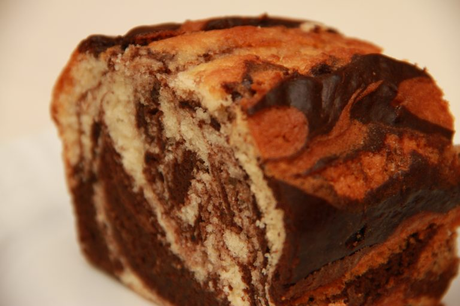

Budin Marmolado

Ingredientes
- 200g de Azucar
- 2 Huevos
- Escencia de Vainilla
- 100ml de Aceite
- 180ml de Leche
- 350g de Harina Leudante
- 2 cucharaditas de Polvo para hornear
- 15g de Cacao en polvo
Paso a paso
- Agrega el azucar y los huevos e incorporar hasta que la mezcla este homogenea
- Echar un chorrito de escencia de vainilla
- Luego agregar el aceite con la leche
- Incorporar la harina leudante (en caso de no tener harina leudante, usar harina comun y agregar el polvo para hornear)
- Mezclar de forma envolvente la mezcla
- Disolver el cacao con agua
- Separar la mitad de la mezcla y a esa mitad, incorporar el cacao
- Poner las dos mezclas (primero la de vainilla y despues la de cacao) en un molde de budinera previamente enmantecado y revolver de forma serpentiante con un cuchillo las mezclas
- LLevar a horno precalentado a 170/180C por 40 minutos o hasta que la mezcla ya este seca
- Desmoldar y listo para compartir